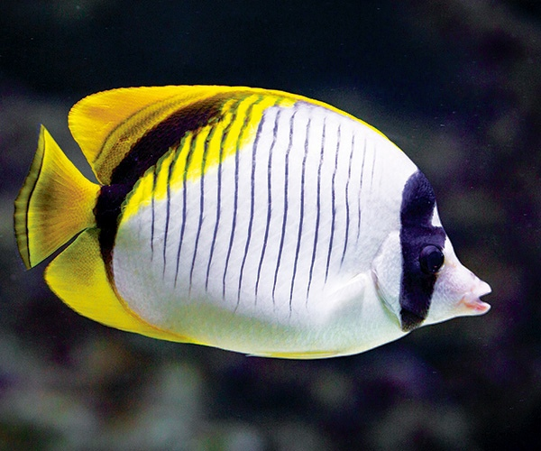

Рыба-бабочка
Описание
Иглобрюхи, или тетрадоны (Tetraodon) – род лучеперых рыб из семейства Иглобрюховые (или Четырехзубые). В настоящее время включает в себя более 100 видов морских и солоноватоводных рыб.
Название рода происходит от двух греческих слов «tetra» – четыре и «odous» – зуб и указывает на уникальный признак представителей рода – наличие на челюстях костных пластин, похожих на 4 зуба.
Характеристики